Memoized information is currently tailored for the primary search
heuristic called Locally Skewed, Globally Balanced or LSGB. The
weight of a SMURF transition counts the number of literals
forced on the transition, plus the expected number of literals forced
below that state, where a forced literal after 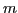 additional choices
is weighted 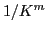. ( , set experimentally, is currently 3 by
default.) In Figure 30, the transition out of the
start state on 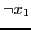 has weight
, set experimentally, is currently 3 by
default.) In Figure 30, the transition out of the
start state on 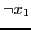 has weight
For the special data structures defined above, the calculation above
is simulated. If a disjunction
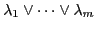
with  still unassigned variables were represented as a SMURF,
the weight of 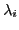 is 0 (since the clause immediately becomes
satisfied, nothing more can be forced), and the weight of
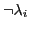 is 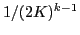. This is directly coded in the
simulated SMURF. Exclusive disjunctions are similar.
Assignments are similar but break into cases; one recurrence relation
is hard to solve, so weights are precomputed as a function of
the number of unassigned 's and are looked up during search.
still unassigned variables were represented as a SMURF,
the weight of 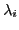 is 0 (since the clause immediately becomes
satisfied, nothing more can be forced), and the weight of
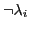 is 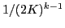. This is directly coded in the
simulated SMURF. Exclusive disjunctions are similar.
Assignments are similar but break into cases; one recurrence relation
is hard to solve, so weights are precomputed as a function of
the number of unassigned 's and are looked up during search.
The LSGB search heuristic is similar to the ``Johnson heuristic'' on CNF formulas where 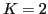. The intuition is to branch toward forced inferences as quickly as possible to narrow the search space (or get lemmas fast). To pick the next variable to branch on: For each variable 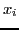, compute (i) the sum 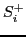 of the weights of transitions on out of all current states and (ii) the sum 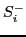 of the weights of transitions on 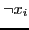. A high sum represents a high ``payoff.'' For an ideal branching variable , both and force many literals, so we branch on the variable where 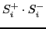 is maximum. For that variable, branch first toward the larger of 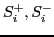.13
There are circumstances where other search heuristics are known to work well. LSGB was intended for applications where not much is known about, or easily determined about, the given problem. If the problem is known to have a lot of exploitable structure, it may be better to specify a different heuristic. We allow the experienced user some choice (see Sections 11.3 and 11.4 below for more information). The SMURF structure admits such heuristics as well; on a simple heuristic, it may not be needed, but (except for preprocessing time) it does not hinder either.
In Section 16, we present benchmark problems comparing SBSAT with LSGB to other solvers such as zChaff.